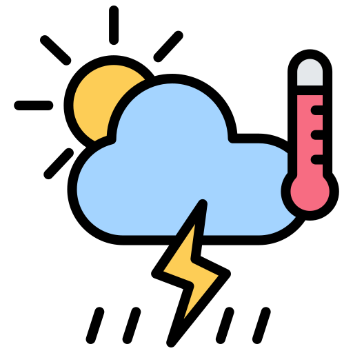
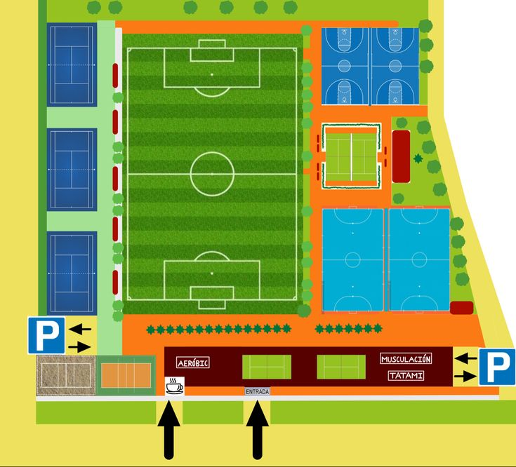

Desarrollador web en formación, apasionado por la tecnología, el desarrollo de aplicaciones y la creación de soluciones innovadoras.
Sobre Mi
Objetivos:
Crear soluciones tecnológicas
Habilidades
Algunas de mis habilidades tecnologicas:
HTML
Java
Python
CSS
Git
GitHub
SQL
#
Proyectos
Solucion Laberintos
Proyecto desarrollado para encontrar la solución de un laberinto, utilizando python.
Python | Algoritmos | GitHub
App Condiciones Climaticas
Aplicacion desarrollada para consultar y mostrar información relacionada con las condiciones climaticas, usando C# y una API.
C# | API | GitHub
Administracion Complejo Deportivo
Programa usando programación orientada a objetos, para la administración de un complejo deportivo. Permitiendo gestionar reservas, y la información de las canchas.
Java | POO | GitHub